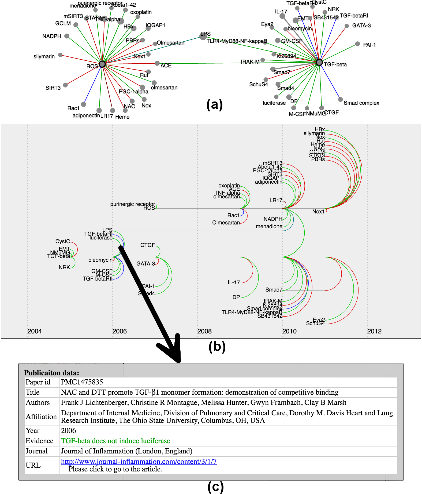

BioLinker: Bottom-up Exploration of Protein Interaction Networks

| Tommy Dang, Long Hoang Nguyen, Abdullah Karim, and Venki Uddameri Computer Science and Civil, Environmental, and Construction Department, Texas Tech University, Texas, USA |




Questions?
Email: Tommy.Dang@ttu.edu
This work was supported by NSF/DHS grant DMS-FODAVA-0808860 and DARPA Big Mechanism Program under ARO contract WF911NF-14-1-0395